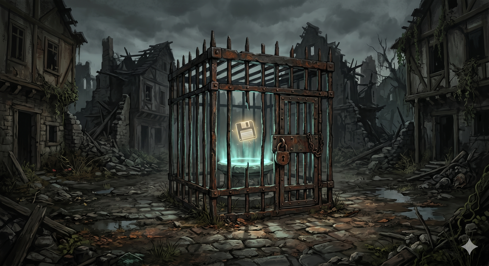

A caged save point in the town centre of the ruined settlement of McBreakfast Sandwiches. An iron cage has been built around a save point that sits on a stone pedestal, with a floating floppy-disk icon rotating above a glowing circle. The cage was originally constructed by Zhakaran slave-keepers to prevent newly spawned slaves from escaping — when an enslaved person died and respawned at the save point, they would materialize inside the cage and be trapped until their captors arrived. Fin and Mara later weaponize the cage to trap and repeatedly kill their former tormentor Marnie, using the save-point respawn mechanic against him. Appears in: Couch Potato Crisis
Location details
- Appears in: Couch Potato Crisis
- Description: A caged save point in the town centre of the ruined settlement of McBreakfast Sandwiches. An iron cage has been built around a save point that sits on a stone pedestal, with a floating floppy-disk icon rotating above a glowing circle. The cage was originally constructed by Zhakaran slave-keepers to prevent newly spawned slaves from escaping — when an enslaved person died and respawned at the save point, they would materialize inside the cage and be trapped until their captors arrived. Fin and Mara later weaponize the cage to trap and repeatedly kill their former tormentor Marnie, using the save-point respawn mechanic against him.
- References: Couch Potato Crisis: Chapter 12 - McBreakfast Sandwiches, Chapter 15 - Save-Point Warfare, Chapter 25 - The Gathering
